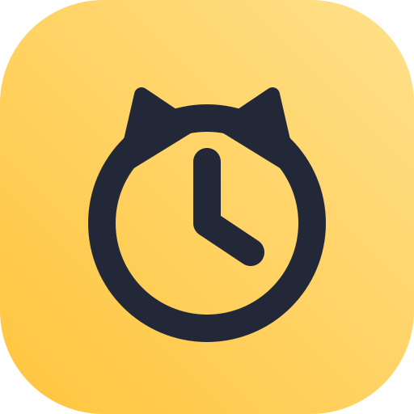
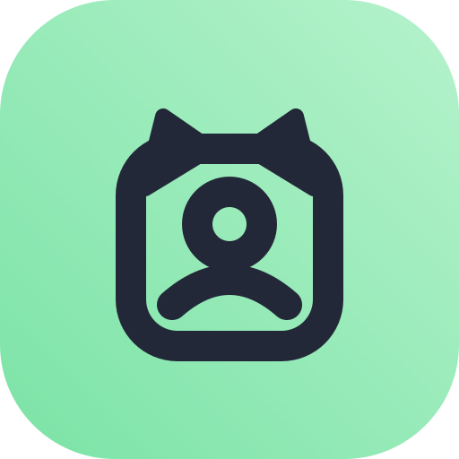
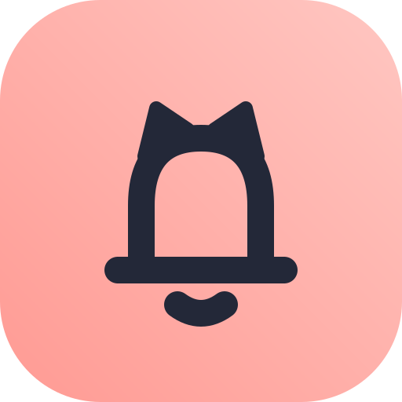
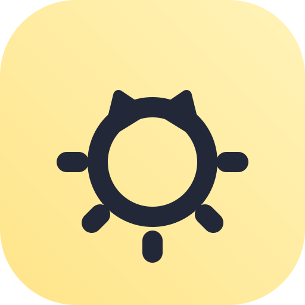
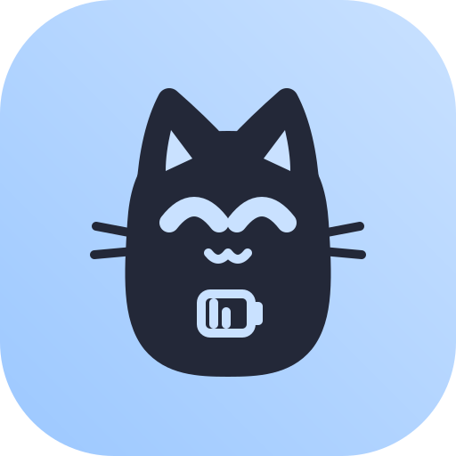
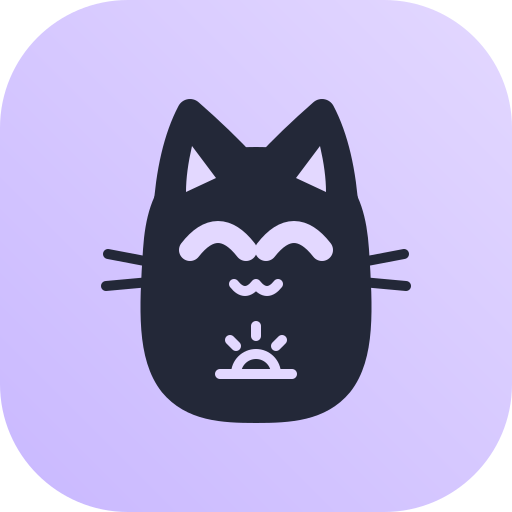
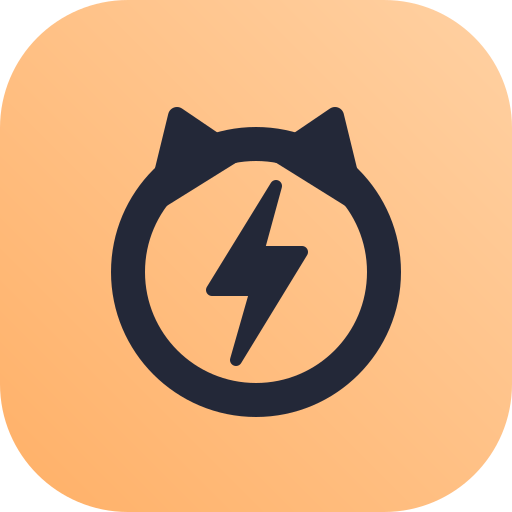

Apps

Niko Clock
Speaks the time out loud, at the press of a big button or every hour.
In progress

Niko Dialer
Tap a family member's photo to call them.
Planned

Niko Reminders
Reminders in a family member's recorded voice, with a photo.
Planned

Niko Light
A rising tone that tells blind users if a light is on.
Planned

Niko Status
One button says battery, signal and airplane mode.
Planned

Niko Day Clock
"Tuesday morning" in big words and pictures.
Planned

Niko Flash
Flashes the light on calls and messages, for older phones.
Planned
Apps will be published on F-Droid first.
Our promise
- Free forever. No ads, no paid features.
- Private. No tracking. No internet permission unless an app truly needs it.
- Usable without reading. Apps speak in the phone's own voice and language.
- Built to last. Designed to keep working through battery savers and Android updates.
- Open source. Every line of code is public under GPLv3.
Help out
Test an app with someone who would use it, translate it into your language, or contribute code.